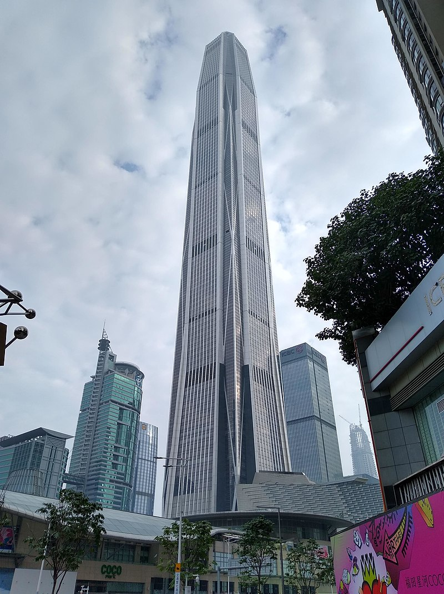
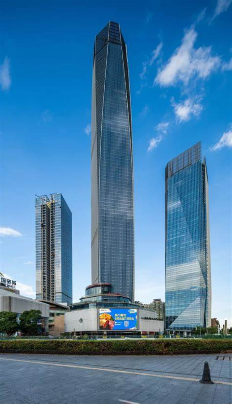

|  |
Ping An Finance Center to najwyższy budynek w Shenzhen i drugi najwyższy w Chinach.
Jego całkowita wysokość wynosi 599 metrów, co czyni go także jednym z najwyższych wieżowców biurowych na świecie.
Budowa zakończyła się w 2017 roku, a inwestycja kosztowała około 5,49 miliarda złotych,
co daje średni koszt budowy na poziomie 14 225 zł za metr kwadratowy.
Wieżowiec służy głównie jako budynek biurowy, a jego imponująca powierzchnia użytkowa obejmuje prawie 386 tysięcy metrów kwadratowych.
Ping An Finance Center jest ważnym elementem panoramy Shenzhen i symbolem dynamicznego rozwoju gospodarczego miasta.
|
 |